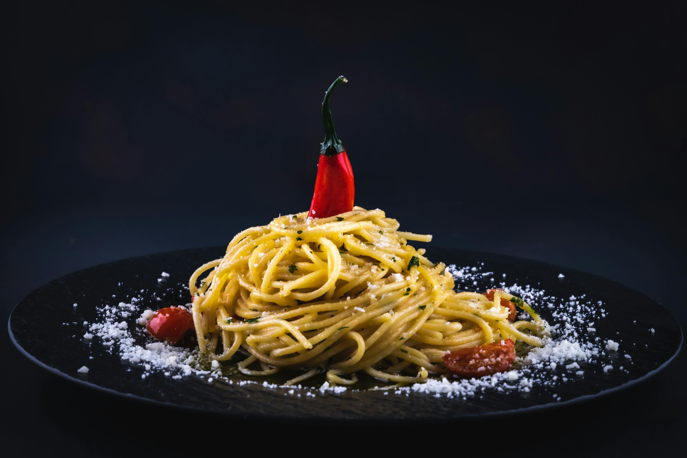

Biryani is a flavorful and aromatic rice dish made with spiced meat (such as chicken, beef, or goat), basmati rice, and a blend of herbs and spices. Originating from South Asia, it's popular in Kenya, especially at coastal regions, and is often served during special occasions and celebrations.
Meet our chapati ndengu dish
Made by the swahili chefs with love and care
Chapati na Ndengu is a popular Kenyan meal consisting of soft, pan-fried flatbread (chapati) served with green grams (ndengu) cooked in onions, tomatoes, and spices. It's a healthy, protein-rich dish that's both filling and flavorful, commonly enjoyed for lunch or dinner across many Kenyan households.
Meet our Mahamri chai dish
Made by the Malindi international chefs with pure love
Mahamri na Chai is a beloved coastal Kenyan breakfast combo. Mahamri are sweet, spiced, deep-fried dough pieces made with coconut milk and cardamom, while chai is Kenyan spiced tea brewed with milk, sugar, and aromatic spices. Together, they make a warm, comforting, and flavorful morning treat.
Meet our Pasta source dish

Made with pure love and care by our beloved american chefs
Pasta with sauce is a simple and tasty dish made by cooking pasta and topping it with a flavorful sauce, such as tomato, cream, or meat-based sauces. It's quick to prepare, versatile, and enjoyed worldwide for its rich taste and satisfying nature. Perfect for lunch or dinner.
About Us
Our restaurant offers a warm, welcoming atmosphere where tradition meets taste. We serve a variety of delicious, home-style Kenyan and international dishes, freshly prepared with quality ingredients. Whether you're craving Ugali Sukuma, Biryani, or Mahamri na Chai, our menu promises flavorful meals and a memorable dining experience for all.